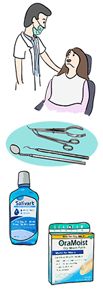
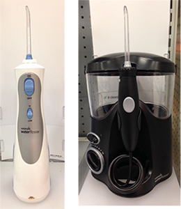

Module: Mouth and Teeth Care
Janet L. Poole, PhD, OTR/L with input from David M. Leader, DMD, MPH
Resources
Activity plan for mouth and teeth care
Get organized for caring for your mouth and teeth with this printout.
Printout PDFGetting the most from your dental appointments

- Tell your dentist and hygienist that you have scleroderma. Give the dentist a list of all of your medications, dosages, and prescribers.
- Have cleanings and check-ups every 3 to 4 months.
- If you have a lot of dental work to be done, consider scheduling two shorter sessions, rather than one long session.
- Bring gloves, a sweater, a jacket, or even a blanket to the dentist and tell the dentist/hygienist you need to be kept warm. Ask to be covered with blankets, if possible.
- Show the dentist or hygienist the mouth exercises you do. Do the mouth exercises while waiting for the dentist and/or hygienist and during the appointment, if needed.
- Ask the dentist to use child-size tools.
- If you feel that it is getting harder to reach all your teeth to brush or floss, even a little bit, tell your dentist. You and your dentist may want to talk about any future work that may need to be done on your teeth and schedule it now, while it is still easy to reach all areas of your mouth.
- Ask your dentist/hygienist about products to keep the teeth in good condition, such as fluoride and toothpastes that harden tooth enamel.
Types of toothbrushes and flossers
There are a variety of toothbrushes and dental aids that can help you maintain good oral hygiene. Below are a few suggestions. You should discuss these and other possibilities with your dentist and hygienist.

- If you feel you cannot twist your hands and/or wrists to do a thorough job with brushing your teeth, try an electric toothbrush.
- Try junior-size or child-size toothbrushes if it is hard to get to all your teeth or open your mouth wide.
- Pump toothpaste may be easier to use than tubes or other containers that have lids.
- There are many different types of floss aids. Some floss aids have small heads (where the floss is) to fit in your mouth. One example is the Reach Access Flosser.
- There are also mechanical devices for cleaning between the teeth, such as the Water Pik Flosser.
Remember, Gastroesophageal Reflux Disease (GERD) and diet can affect oral health
- With GERD or reflux, stomach acid causes erosion of enamel and increases the risk of tooth decay. See the Module on Dysphagia and the Digestive Tract for suggestions on managing GERD and reflux.
- Avoid acidic foods and sugar, as they contribute to tooth decay.
See the links below to the Scleroderma Foundation for more information on oral and dental care.
http://www.scleroderma.org/site/DocServer/Dental.pdf?docID=313
http://www.scleroderma.org/site/DocServer/Leader_Dentist_Scleroderma.pdf?docID=5581
http://www.scleroderma.org/site/News2?page=NewsArticle&id=11393#.Va-epFLbKos